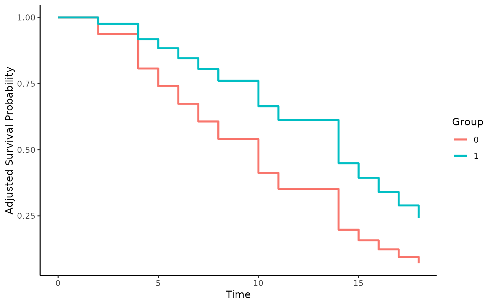

One-Step Targeted Maximum Likelihood Estimation Survival Curves
surv_ostmle.RdThis page explains the details of estimating adjusted survival curves using the one-step targeted maximum likelihood methodology for single event time-to-event data (method="ostmle" in the adjustedsurv function). All regular arguments of the adjustedsurv function can be used. Additionally, the SL.ftime, SL.ctime and SL.trt arguments have to be specified in the adjustedsurv call. Further arguments specific to this method are listed below.
Arguments
- adjust_vars
A character vector of column names specifying variables to be used when modeling the outcome, treatment and censoring mechanism. Can be set to
NULL(default), in which case all covariates are used. See details and examples.- SL.ftime
[required] A character vector or list specification to be passed to the
SL.libraryoption in the call toSuperLearnerfor the outcome regression. See?SuperLearnerfor more information on how to specify validSuperLearnerlibraries. It is expected that the wrappers used in the library will play nicely with the input variables, which will be called "trt",names(adjust_vars), and "t".- SL.ctime
[required] A character vector or list specification to be passed to the
SL.libraryargument in the call toSuperLearnerfor the estimate of the conditional hazard for censoring. It is expected that the wrappers used in the library will play nicely with the input variables, which will be called "trt" andnames(adjust_vars).- SL.trt
[required] A character vector or list specification to be passed to the
SL.libraryargument in the call toSuperLearnerfor the estimate of the conditional probability of treatment. It is expected that the wrappers used in the library will play nicely with the input variables, which will benames(adjust_vars).- epsilon
The size of the updating step. See
MOSSfor more details.- max_num_iteration
The maximum number of iterations used in the updating step of the One-Step estimator.
- psi_moss_method
Specifies the method used to make the pooled updating step. Can be either
"l1"(Ridge Regression),"l2"(LASSO) or"glm". For more information see documentation ofMOSS.- tmle_tolerance
The tolerance used to determine whether the TMLE estimator converged or not. See
MOSSfor more details.- gtol
Tolerance at which estimated treatment assignment probabilities are truncated. Every propensity score bigger than 1 -
gtolis set to 1 -gtoland every propensity score smaller thangtolis set togtol. Useful when there are extreme propensity scores close to 0 or 1.
Details
Type of Adjustment: Adjustments are made based on the treatment assignment mechanism, the outcome mechanism and the censoring mechanism. No models can be supplied. The adjustments are made based on
SuperLearnerlibraries.Doubly-Robust: Estimates are Doubly-Robust.
Categorical groups: Currently only two groups in
variableare allowed. Must be a factor variable with exactly two levels.Approximate Variance: Calculations to approximate the variance and confidence intervals are available.
Allowed Time Values: Allows only integer time.
Bounded Estimates: Estimates are guaranteed to be bounded in the 0 to 1 probability range.
Monotone Function: Estimates are guaranteed to be monotone.
Dependencies: This method relies on the survtmle, MASS, SuperLearner, R6 and tidyr packages. The code was taken directly from the MOSS package, which is currently not available on CRAN. Tiny changes were made but it's essentially the same. You do not have to install it but it can be installed using the following code:
devtools::install_github("wilsoncai1992/MOSS").
If you use this method, please cite the MOSS package.
Standard TMLE is a two-step procedure. First, initial estimates for the treatment-assignment and the outcome-mechanisms are made using loss-based learning. This is implemented here using the SuperLearner methodology. In the next step, the estimates obtained by using the outcome-mechanism model are fluctuated based on information from the treatment-assignment model. If the outcome model is already consistent, this fluctuation is very small and the estimates stay consistent. If the outcome model is biased, the fluctuation removes the bias whenever the treatment assignment model is consistent. This process is iterative and continues until a threshold is hit (either the maximum number of iterations is reached or the bias is smaller than the specified tolerance, see ?survtmle).
In contrast to the estimator implemented in the tmle method, the OSTMLE uses a LASSO or Ridge Regression model in the targeting step to fluctuate the initial estimates. Details can be found in Cai and van der Laan (2020).
As has been shown in multiple studies by Mark J. van der Laan and colleagues, this method has some desirable mathematical properties and generally performs well in appropriate scenarios. The biggest problem is however, that it is only defined for discrete (integer-valued) survival times. Simply discretizing continuous survival times only works to a certain extent and is generally discouraged.
When the sample size is large or many time points are of interest, this method will also be *very* slow. While possible to run, bootstrapping would take an enormous amount of time and is therefore discouraged.
Value
Adds the following additional objects to the output of the adjustedsurv function:
psi_moss_hazard_0: The iterated MOSS objects for the control group.psi_moss_hazard_1: The iterated MOSS objects for the treatment group.
References
Weixin Cai and Mark J. van der Laan (2020). "One-Step Targeted Maximum Likelihood Estimation for Time-To-Event Outcomes". In: Biometrics 76, pp. 722–733
David Benkeser, Marco Carone, and Peter B. Gilbert (2018). "Improved Estimation of the Cumulative Incidence of Rare Outcomes". In: Statistics in Medicine 37.2, pp. 280–293
Megan S. Schuler and Sherri Rose (2017). "Targeted Maximum Likelihood Estimation for Causal Inference in Observational Studies". In: American Journal of Epidemiology 186.1, pp. 65-73
Author
The wrapper function was written by Robin Denz, the MOSS package (which this wrapper is based on) was written by Wilson Cai. See <https://github.com/wilsoncai1992/MOSS/> for more details.
See also
survtmle, MOSS, SuperLearner
Examples
# not run because any meaningful example is too slow
# \donttest{
library(adjustedCurves)
# simulate some data as example
sim_dat <- sim_confounded_surv(n=50, max_t=1.2)
sim_dat$group <- as.factor(sim_dat$group)
# only works with integer time, only unbiased with small amounts of them
sim_dat$time <- round(sim_dat$time*15) + 1
# calculate adjusted survival curves, using SuperLearner but only
# using the SL.glm library. In practice you would want to use more than
# that. See ?MOSS and ?survtmle
adjsurv <- adjustedsurv(data=sim_dat,
variable="group",
ev_time="time",
event="event",
method="ostmle",
adjust_vars=c("x1", "x2", "x3", "x4", "x5", "x6"),
SL.ftime=c("SL.glm"),
SL.ctim=c("SL.glm"),
SL.trt=c("SL.glm"))
#> censoring sl error
#> Warning: Max number of iteration reached, stop TMLE
#> Warning: Max number of iteration reached, stop TMLE
# plot the curves
plot(adjsurv)

# }